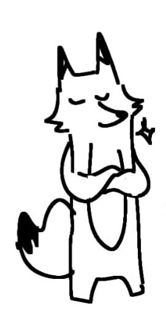

Hi, I am Rem, the one who draw all these pieces and build this website. I draw surreal pieces where i would take a song and try to interpret the sounds into something colourful. My influcences comes from zentangles and various kinds of patterns all around the world. I adapt them into my own style and make small ecosystems of my own. I like to combine my creative passion with technology and such is my reason for building this digital gallery.
Contact me at: nmyatnoeh@gmail.com